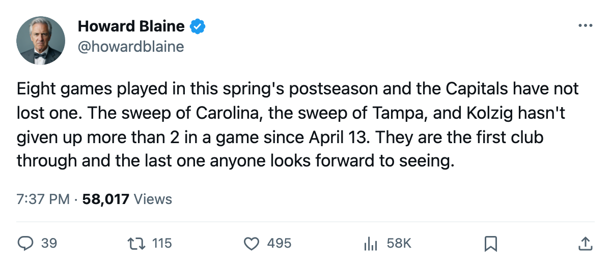
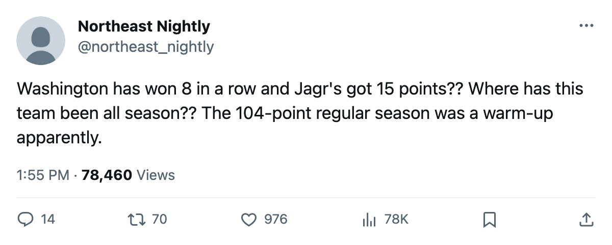

TB
TB TOR
TOR DAL
DALThe Bracket, April 30: Washington goes 8-0, and three series land tonight or tomorrow
The Capitals swept Tampa Bay 4-0 in Round 2 after sweeping Carolina 4-0 in Round 1. Toronto and Dallas each lead 3-1 with Game 5 at home tonight. Edmonton and Anaheim are all square heading into Sunday.
 Howard BlaineSenior writer, The Blaine Rankings · The Hockey Gazette
Howard BlaineSenior writer, The Blaine Rankings · The Hockey Gazette
 Washington Capitals is the first club into the conference finals. Washington closed out Tampa Bay 3-1 on Friday for a 4-0 sweep, its eighth straight playoff win after a 4-0 first round over Carolina. No team has touched the Capitals since April 8. They have outscored opponents 27-11 across 8 games, and
Washington Capitals is the first club into the conference finals. Washington closed out Tampa Bay 3-1 on Friday for a 4-0 sweep, its eighth straight playoff win after a 4-0 first round over Carolina. No team has touched the Capitals since April 8. They have outscored opponents 27-11 across 8 games, and  Olaf Kolzig82 [502] has lost none, carrying a 1.43 GAA and a .928 save percentage in 6 wins while Josh Harding77 [1191] went 2-0 with a 1.00 GAA.
Olaf Kolzig82 [502] has lost none, carrying a 1.43 GAA and a .928 save percentage in 6 wins while Josh Harding77 [1191] went 2-0 with a 1.00 GAA.
 Jaromir Jagr84 has 3 goals and 12 assists for 15 points in 8 games.
Jaromir Jagr84 has 3 goals and 12 assists for 15 points in 8 games.  Pascal Dupuis73 [251] has 7 goals and 11 points.
Pascal Dupuis73 [251] has 7 goals and 11 points.  Sergei Gonchar79 [329] carries 3 goals and 8 assists. The Capitals won 7-2 against Tampa Bay in the regular season and have won 11 of their last 12 games dating back to late March, when they went on an eight-game winning streak before losing their final two to close the season.
Sergei Gonchar79 [329] carries 3 goals and 8 assists. The Capitals won 7-2 against Tampa Bay in the regular season and have won 11 of their last 12 games dating back to late March, when they went on an eight-game winning streak before losing their final two to close the season.
The sweep ends Tampa Bay's season. The Lightning were the third seed at 107 points, won their first-round series 4-2 over Boston, and then met a Capitals team that did not miss.  Nikolai Khabibulin89 [478] went 4-6 with a 2.52 GAA and a .888 save percentage, good numbers by most standards, but never enough to hold off Washington.
Nikolai Khabibulin89 [478] went 4-6 with a 2.52 GAA and a .888 save percentage, good numbers by most standards, but never enough to hold off Washington.
The four Round 2 series
(1) TOR v (7) PIT: TOR leads 3-1. Game 5 tonight at Toronto. Pittsburgh won 3-1 in Game 1 at Toronto on April 22, then lost 3-2 at Toronto on April 24, 4-2 in Pittsburgh on April 26 and 4-3 in Pittsburgh on April 28.  Roberto Luongo95 [593] has been 7-2 with a 1.90 GAA and a .948 save percentage through two rounds. Toronto outscored Pittsburgh 32-19 in 8 regular-season meetings and has won three straight after the Game 1 loss.
Roberto Luongo95 [593] has been 7-2 with a 1.90 GAA and a .948 save percentage through two rounds. Toronto outscored Pittsburgh 32-19 in 8 regular-season meetings and has won three straight after the Game 1 loss.  Mario Lemieux85 [572] carries 10 points for Pittsburgh (3+7), and Eric Meloche75 [654] has 8 (5+3), the Calder winner from last spring scoring again.
Mario Lemieux85 [572] carries 10 points for Pittsburgh (3+7), and Eric Meloche75 [654] has 8 (5+3), the Calder winner from last spring scoring again.
(3) TB v (4) WSH: WSH wins 4-0. The Lightning are eliminated; Washington advances to the conference finals.
(2) DAL v (8) PHX: DAL leads 3-1. Game 5 tonight at Dallas. Dallas won Game 1 at home 2-1, Phoenix took Game 2 at Dallas 3-1, then Dallas won Games 3 and 4 in Phoenix 4-1 and 3-2.  Marty Turco97 [1018] is 7-1 with a 1.45 GAA.
Marty Turco97 [1018] is 7-1 with a 1.45 GAA.  Mike Johnson83 [446] has carried Phoenix with 9 goals and 12 points in 11 games, and
Mike Johnson83 [446] has carried Phoenix with 9 goals and 12 points in 11 games, and  Shane Doan85 [231] adds 6 goals and 9 points. Phoenix came here after taking the first seed in the West, Colorado, to a 4-3 series. The gap between these two clubs was 19 points in the regular season, and Dallas has the Presidents' Trophy and the league's deepest home record at 30-11.
Shane Doan85 [231] adds 6 goals and 9 points. Phoenix came here after taking the first seed in the West, Colorado, to a 4-3 series. The gap between these two clubs was 19 points in the regular season, and Dallas has the Presidents' Trophy and the league's deepest home record at 30-11.
(5) EDM v (6) ANA: All square, 2-2. Game 5 Sunday at Edmonton. Edmonton won Games 2 and 3, Anaheim took Game 1 (3-1 in Edmonton) and Game 4 on overtime at home (3-2). The series sits at 20 goals for, 20 against across four games.  Mike York84 [1100] leads all playoff scorers with 17 points (5+12).
Mike York84 [1100] leads all playoff scorers with 17 points (5+12).  Radek Dvorak79 [252] has 10 goals and 16 points, and
Radek Dvorak79 [252] has 10 goals and 16 points, and  Mike Comrie86 [170] carries 16 points (3+13). On the other side,
Mike Comrie86 [170] carries 16 points (3+13). On the other side,  Sergei Fedorov90 [276] has 10 points (7+3) and
Sergei Fedorov90 [276] has 10 points (7+3) and  Andy McDonald74 [642] adds 9 (7+2).
Andy McDonald74 [642] adds 9 (7+2).  Jean-Sebastien Giguere97 [317] holds a 2.03 GAA and .883 save percentage in 9 games against
Jean-Sebastien Giguere97 [317] holds a 2.03 GAA and .883 save percentage in 9 games against  Tommy Salo88 [870] at 2.24 and .870.
Tommy Salo88 [870] at 2.24 and .870.
What the bracket has done
The lower seeds have won 3 of 8 first-round series:  Pittsburgh Penguins (7) beat
Pittsburgh Penguins (7) beat  New Jersey Devils (2),
New Jersey Devils (2),  Phoenix Coyotes (8) beat
Phoenix Coyotes (8) beat  Colorado Avalanche (1), and
Colorado Avalanche (1), and  Edmonton Oilers (5) beat
Edmonton Oilers (5) beat  Vancouver Canucks (4). In the second round, Washington (4) has disposed of Tampa Bay (3), and Pittsburgh (7) remains alive against Toronto (1) at 3-1. The 8th-seeded Phoenix Coyotes trails 3-1 in Dallas but can still force a Game 7.
Vancouver Canucks (4). In the second round, Washington (4) has disposed of Tampa Bay (3), and Pittsburgh (7) remains alive against Toronto (1) at 3-1. The 8th-seeded Phoenix Coyotes trails 3-1 in Dallas but can still force a Game 7.
Six clubs are out: Boston, New York (Islanders), Carolina, New Jersey, Nashville, Colorado, Detroit, Vancouver, and Tampa Bay. Nine remain.
The week
| Date | Away | Home | Series |
|---|---|---|---|
| 4/30 | PIT | TOR | R2: TOR leads 3-1 |
| 4/30 | PHX | DAL | R2: DAL leads 3-1 |
| 5/01 | ANA | EDM | R2: 2-2 |
| 5/01 | WSH | TB | R2: WSH won series |
Three of these four carry a series decision. Washington plays a dead rubber at Tampa Bay on Sunday. The other three are on the line tonight and tomorrow. The winner of Toronto-Pittsburgh meets Washington in the conference finals. The winner of either Dallas-Phoenix or Edmonton-Anaheim meets the other Western pair in the West finals.
The Capitals' 8-0 is the longest winning streak in this spring's field. Toronto's last 4 games (all wins) bring them to 7-2. Dallas sits at 6-1. Edmonton leads 5-2 in aggregate games, and Anaheim 4-3. Nobody else has a winning record this spring.
Predictions
I have logged two predictions from the last edition and both settled as hits: Washington beats Tampa Bay at home on April 29 (it did, 3-1), and Dallas earns at least 1 point at Phoenix on April 28 (it won 3-2). My hit rate stands at 21-19 with 41 unsettled.
For tonight and tomorrow, I will log these three:

